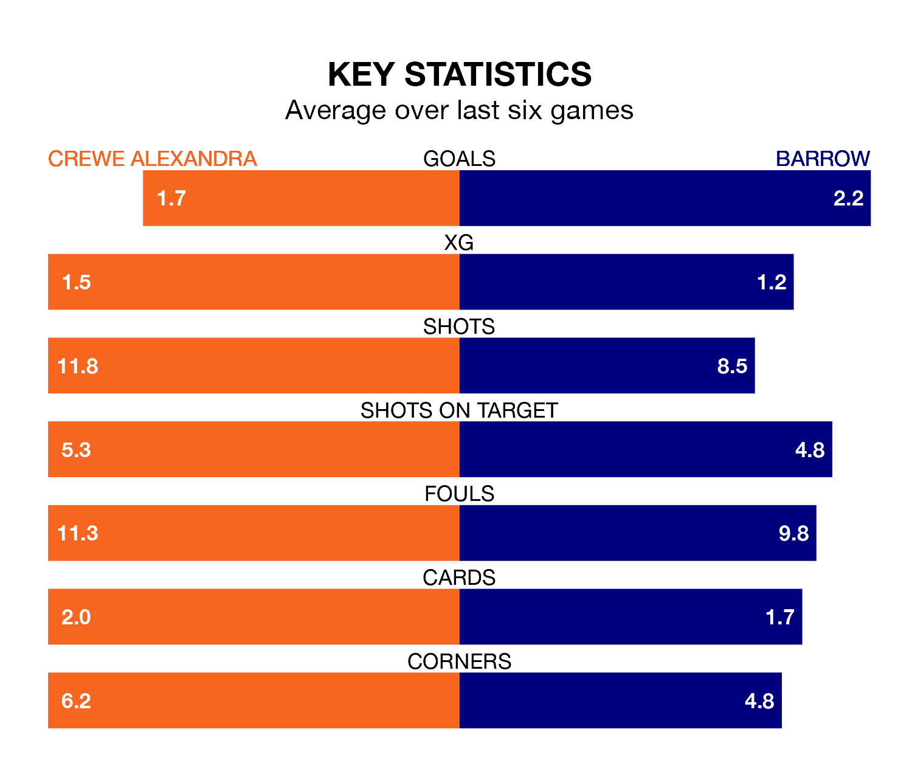

Crewe Alexandra face a challenge to maintain their high-scoring form at home against a tight Barrow defence on Friday.
With 44 goals in 21 games, Crewe are the joint-second-highest scorers in EFL League Two ahead of the 7.45pm kick-off at the Mornflake Stadium.
They face a Bluebirds side who have scored 30 in 21 matches, but conceded only 16 goals, putting them top of the league's tightest defences.
Crewe are in reasonable form in EFL League Two, with three wins and two draws from their last six games.
With six wins and no losses over that period, Barrow's form is much better – they have taken 18 points from 18, compared to the Railwaymen's 11.
The Bluebirds are second in the table after 21 games, of which they have won 11 and drawn seven, earning 40 points.
The hosts are three places behind the away team in fifth, with 10 wins and seven draws putting them on 37 points.
With Paul Farman between the sticks, Barrow can rely on one of the league's safest pair of hands. He has kept eight clean sheets in his 19 appearances this season, and only two other 'keepers – Stockport County's Ben Hinchiffe and AFC Wimbledon's Alex Bass – have been able to prevent the opposition scoring on more occasions in EFL League Two.
In Crewe's net, Harvey Davies has four clean sheets in 21 games. He has conceded a goal every 63 minutes, more than twice as often as the 132 minutes between goals for Farman.
Crewe's last match was on Saturday, a 3-3 draw against Accrington Stanley, with Aaron Rowe, Elliot Nevitt and Mickey Demetriou getting the goals for the Railwaymen.
Barrow beat Swindon Town 3-0 last time out, also on Saturday, with James Chester, Kian Spence and Sam Foley on the scoresheet.
